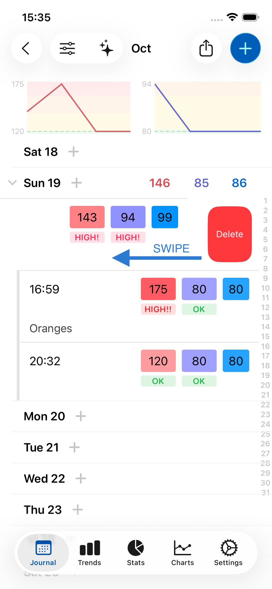
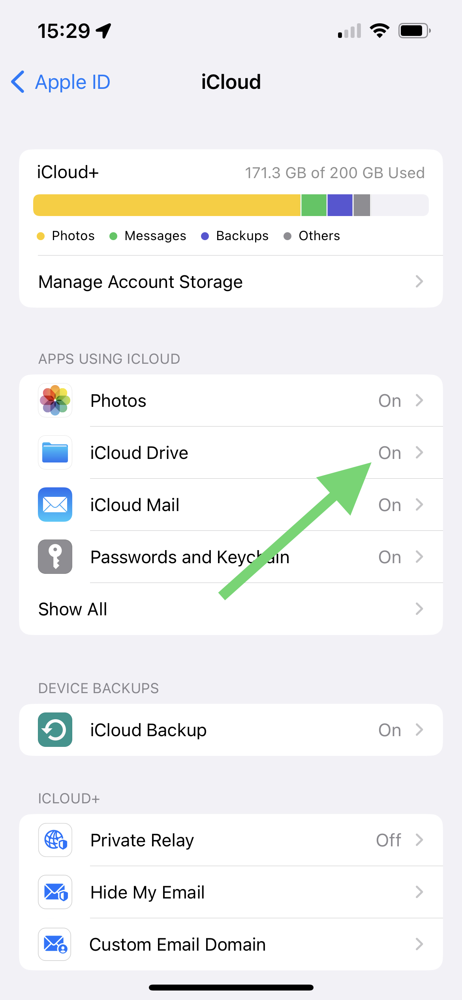

You can add a new record by either 1. pressing on the day or 2. pressing + in the top right. Both options are shown to by the arrows in the image below.

Yes. You can add many records per day, as shown above. Just press on the day again, or on +, to do this.
To delete a record, you can swipe left on the record and press Delete, or press on the record to open it and press the trash can icon in the top left of the screen. Both methods are shown below:

When your notes contain 8 or more words, an emoji will appear above them to indicate the predicted sentiment. This feature can help you understand if your writing comes across as overly negative or positive, or remind you of what is or isn't working, serving as a guide for your writing. The sentiment is calculated entirely on your device using Apple's Natural Language API, so no data leaves your device, ensuring complete privacy. If you prefer, you can disable this feature in Settings under General.
If you don't have an AirPrint compatible wireless printer, you can buy one here.

Yes. The app makes this easy to do. Press the share button (as shown below), select PDF, and then choose your Mail app. The PDF report will be attached to an email you can then send to your doctor.

You can hide averages and totals in view options, as shown below. That will then only show your entered values, and not averages. This can be useful if you find having the averages/totals in between your entered data confusing.

Yes. Follow the instructions above, but select Excel or CSV instead of PDF as output format. Then either save the file on your device, or email it to yourself.
Excel format is more reliable, while CSV may be more widely compatible - both should open in Excel and similar software, like Apple Numbers or Google Sheets.
Yes! In Journal and Stats, press the Export button (top right) and select all data to export. JSON format is best because it's universal (works with any software), human-readable (open it in any text editor), and preserves all your data completely.
You can also make backups in Settings > Data > Manage Backups which include both your data and photos in a zip file that can be opened on any computer. Your data is always yours to keep, even if you cancel.
You can email it to anyone you like. You might want to periodically email your data to yourself for safekeeping and backup purposes. You can also save the PDF or CSV file on your device for later use.
Double-tap the Journal icon in the tab bar at the bottom of your screen.
To view data from a previous month (for example, September data when you're currently in October):
Your data is always saved and accessible - you can navigate between months at any time to view your historical records.
If you still don't see your data after checking the month view: Go to Settings > Data > Manage Backups and look for any backups from the month you're trying to view (or early in the following month). If you find a backup from that time period, you can restore from it to recover your data. This can help if you've reinstalled the app or if there was a sync issue.
Open a record and simply tap on the time or date to change it, as shown below.

No. We removed all advertisements and IDFA tracking from all Feeltracker apps. We don't track you across other apps or websites, and we never sell your data to advertisers. Your health data is private and belongs only to you. The apps are supported through optional premium subscriptions, not advertising revenue.
Your data is encrypted when stored on your device. This means even if your device is stolen, no one can access it.
Your data is stored locally on your device (like Notes or Photos). If you have iCloud enabled, it syncs across your Apple devices. We never upload your data to our servers - it stays completely private and under your control.
No. The data only ever lives on your device and on iCloud, which runs on servers managed by Apple.
Yes. Custom Arts Ltd is registered with the UK Information Commissioner's Office (ICO) under registration number ZB644620. We comply with both the UK General Data Protection Regulation (UK GDPR) and the EU General Data Protection Regulation (EU GDPR). You can verify our registration at ico.org.uk.
Under UK and EU GDPR, you have several rights including: the right to access your data, the right to rectification (correction), the right to erasure (deletion), the right to data portability, and the right to object to processing. Since Feeltracker stores all your data locally on your device and in your personal iCloud account, you already have direct control over your data. You can view, export (in PDF, CSV, Excel, or JSON format), or delete your data at any time through the app's settings.
Since your data is stored locally on your device and in your personal iCloud account, you can access, export, or delete it directly through the app without needing to contact us. Go to Settings > Data to manage backups, or use the Export feature in Journal/Stats to export your data in various formats. If you have any questions about your data rights, contact us at support@feeltracker.com.
iCloud enables your data to be backed up, and synced between your devices. Then if you lose your phone or get a new one, your data can be restored from iCloud.
Your data should automatically be synced across your devices. Ensure that:

One subscription will remove ads on all devices. If you see ads on any additional devices, go to Settings > Remove Ads, and press Restore Purchase. Ensure each device is logged into the same iCloud account.
Backups are made automatically every week by default (although you can turn this off in Settings). You can also create manual backups in Settings > Data.
There’s no limit to number of backups made. Backups can go back years, and generally take very little space, so deleting them won't make much difference to your device's storage. If you need to free up space, it's better to delete heavier files on your device such as photos and videos.
Currently backups aren’t synced on iCloud, but your current data is. That means if you get a new iPhone or iPad, your current data will appear there too, but not your backups, as each device keeps its own local backups.
This means that, for example if you delete a record on your iPhone and it’s gone from iCloud and your phone, you could still go back to your iPad and restore from one of its older backup snapshots.
No! The app works like Apple's Notes or Photos - no accounts, no login, no sign-up required. Your data is stored locally on your device and syncs via iCloud if you have it enabled. This means your data is completely private and under your control.
Yes, and your data is automatically synced between them if logged into the same iCloud account. On the iPad version you have more space for notes, and can see more items.
Yes. The apps is available for Apple Silicon Macs (M1 onwards). In the Mac app, you can resize the window to see more data on larger screens. You can download the Mac app here on your M1 or later Mac.
We'd love to hear your feedback. Email us at feedback@feeltracker.com.
Yes. Go to the Settings tab and turn off the slider next to Enable Sound Effects.
Trends lets you identify what's on your mind, why, and the effect it's having on you. Scroll down for more detail and some examples on how Trends works in your app.
For Trends to work, you need to take notes when you save records. You can do this on any record in the Notes field.
This currently shows you all records between 2 dates, and an average/total in between that range. This enables you to get an average/total for any period.
Journal is the main diary/log section which lets you input data and view it on a monthly/yearly/lifetime basis, with averages and totals
Trends lets you identify patterns in the data you're recording in Journal so you can act on them.
Stats lets you see your data in chronological order (newest item first) without monthly or yearly grouping, and let's you see averages and totals between any two dates.
There's no need at all to log out – the device automatically unloads apps/resources from memory as needed.
Modern iPhones and iPads have a lot of energy-efficient memory, so apps can stay in memory for a long time without any adverse effects. Access to this memory is secure, and is already proteced by Face ID, Touch ID, or a passcode.
If you'd like to close an app anyway (for example if it has become unresponsive) you can follow Apple's instructions here.
There's no need to login either, as the app uses your iCloud account so already can sync/backup data across your devices, similar to how the Photos and Notes app do, without requiring any identifying personal data to be shared.
Yes. As soon as you press the side button on the device, to lock it as you normally do, no one can get into your app or data while it's locked.
We want you to first try the app and see if you find useful, without any distractions - you can do this for free, without seeing Google ads. After you save 7 records, you may see some Google ads, which help support the app and keep it free.
Yes! To do this, press the ❎ button on the banner. This will bring up the option to subscribe, for a nominal fee. While you are subscribed you will not see any ads.
We hear you. These customised native ads are designed to blend in with the rest of the app and still look good, without being jarring or spammy. We want you to be able to enjoy using the app, even if you're unable to pay. Don't forget to tell your friends about it!
The app is completely free with all core features (tracking, charts, exports). Premium is an optional paid upgrade that adds advanced features like unlimited AI analysis, extended reports, and cloud backups. You can use the app fully without ever paying.
A small regular subscription fee makes the app easier to try without large upfront cost. Long-term, subscription revenue helps us maintain the app and funds the development of useful new features.
No! All your data stays exactly where it is - nothing is lost. Whether you're updating to a new version of the app or upgrading to Premium, your readings remain safe. Premium just unlocks extra AI features on top of what you already have.
Thank you - we love you too! The best way to help is to leave a 5-star review on the App Store. Your reviews help other people discover the app and motivate us to keep improving it. Thank you for being a valued customer!
Please leave a review by following the link for your app:
We're sorry you're having a bad experience! Please reach out to us first at support@feeltracker.com and we'll do everything we can to help. Most user requests are answered within minutes or hours, and sometimes we even update the app within 1-2 days based on customer feedback like yours. Please give us a chance to make it right - we want to make this the best app for your needs!
Nothing! Your data stays on your device forever. Canceling Premium only removes the advanced features - all your tracked data, notes, and history remain accessible in the free version.
Thank you for trying the app. Let me know if there's anything I can do better at gs@feeltracker.com and I'll try to help. Often, fixes and improvements based on user feedback are shipped in an app update on the same or next day.
To cancel your subscription:
Or use this direct link: https://apps.apple.com/account/subscriptions
To request a refund (if you just subscribed): Visit Apple's refund request page.
Yes! The AI camera scanning works with ANY blood pressure monitor that has a digital display showing numbers. You don't need special "support" for your device - just point your camera at the screen and scan. This feature is free and unlimited for all users.
No, the app does not connect directly to blood pressure monitors via Bluetooth. Instead, we've focused on making manual entry effortless through AI camera scanning technology. Simply point your iPhone's camera at your monitor's display after taking a reading, and the app automatically reads the numbers. This works with virtually any blood pressure monitor that has a digital display, regardless of brand or model. There's no pairing required, no specific device compatibility to worry about, and it takes just seconds. This feature is always free and unlimited.
After taking your blood pressure reading, open the app and tap the "+" button, then select "Scan with Camera." Hold your phone steady about 6-12 inches away from your monitor's display, making sure the numbers are clearly visible and well-lit. The app will automatically read the systolic, diastolic, and pulse values. For best results, ensure good lighting and keep your phone steady while scanning. This works with most digital monitors including OMRON, Microlife, and Beurer brands.
This is usually caused by Apple Health sync configuration. The most common issue is having only write permissions enabled for Apple Health, but not read permissions. To fix this: Go to Settings > Data > Apple Health, and make sure BOTH read AND write permissions are enabled for Blood Pressure and Heart Rate - not just write. The app needs read permission to check if a reading already exists before importing from Health.
A tags feature is coming within the next few months that will let you track readings for multiple people on one device. You'll be able to tag each entry with a person's name and then generate individual reports for each family member.
First, make sure you're signed into the same iCloud account on both devices. Go to Settings > [Your Name] and check the Apple ID. Second, verify that iCloud Drive is enabled on both devices (Settings > [Your Name] > iCloud > iCloud Drive). Your data syncs automatically through iCloud, but it requires an internet connection and can take a few minutes. Try opening the app on each device and pulling down to refresh.
All core tracking features are completely free: unlimited entries, AI camera scanning (always free), all charts and trends, Apple Health sync, and PDF/CSV exports. The subscription adds: ad removal for a clean experience, enhanced AI chat (100 uses per day vs 10 free), and access to advanced AI features. All future premium features will be included for subscribers.
MAP (Mean Arterial Pressure) represents the average pressure in your arteries during one cardiac cycle. It's calculated automatically for every reading. MAP is particularly important for LVAD (Left Ventricular Assist Device) patients and others with specific cardiovascular conditions. To enable MAP display, go to Settings > Blood Pressure > Show Mean Arterial Pressure (MAP). Customizable MAP ranges are coming in version 2.8.x.
When entering a note (like "Morning reading - before medication"), tap the "Template" button at the bottom left of the notes field and save it as a template. Next time you enter a reading, tap "Template" again and select from your saved templates - the text is inserted instantly. This is great for recurring notes like "Morning - pre-medication" or "Evening - after dinner."
Your blood pressure should normally be between 90-140 for systolic value, and 60-90 for diastolic value. If it's outside this range, you should speak to a doctor.
According to the NHS, ideal blood pressure is between 90/60 mmHg and 120/80 mmHg. However, that can vary depending on sex, age, and other variables. Therefore it is best to consult your local doctor for an accurate assessment of your blood pressure based on your own individual circumstances.
Blood pressure is measured using a digital blood pressure monitor. Here you can find blood pressure monitors that work great with the Camera Scan AI feature. The app can automatically read values from most digital monitors including OMRON, Microlife, and Beurer brands.
With Trends, this app takes your data and notes, and shows what things affect you and how. For example, you could see that you meditated 20 times last year, and that meditation lowers your blood pressure. Conversely, you could see that every time you meet Bob, you argue, and he raises your blood pressure. The more you use notes, the more useful Trends can be.
For example, you go running 10 times. 5 times, your blood pressure goes down by 10, and the other times it goes down by 5. Trends will show that on average, running helps reduce your blood pressure by about 7.5 points.
With Trends, this app takes your data and notes, and shows what things affect you and how. For example, you could see that you met Jane 20 times last year, and that on average, Jane makes you very happy. Conversely, you could see that every time you meet Bob, you argue, and he makes you unhappy. The more you use notes, the more useful Trends can be.
For example, you meet Jane 10 times. 5 times she made you very happy (+2), and 5 times she made you fairly happy (+1). Trends will show that on average Jane makes you quite (+1.5) happy.
With Trends, this app takes your data and notes, and shows what words are most on your mind. For example, you could see that you used a word 20 times last year. Conversely, you could see that you used another word 50 times - a lot more often. The more you use notes, the more useful Trends can be.
For example, you write about Jane 120 times in your notes, more than about your job, which you write about 50 times. Trends in this case shows that clearly the top thing on your mind was Jane.
With Trends, this app takes your data and notes, and shows what things affect you and how. For example, you could see that you drank a lot of coffee last week, and that because of this you had less sleep. Conversely, you could see that every time you eat salad or go to the gym, you lose sleep better. The more you use notes, the more useful Trends can be.
For example, you drink coffee 10 times. 5 of those times, you underslept 2 hours, and the other 5 times you underslept 1 hour. Trends will show that on average, drinking coffee causes you to undersleep by 1.5 hours.
With Trends, this app takes your data and notes, and shows what things affect you and how. For example, you could see that you ate fast food 20 times last year, and that over time, you gain weight when you eat fast food. Conversely, you could see that every time you eat salad or go to the gym, you lose weight. The more you use notes, the more useful Trends can be.
For example, you eat donuts 10 times. 5 times, your weight goes up by 0.1kg. The other 5 times your weight goes up by 0.3kg. Trends will show that on average, eating donuts makes your weight go up by 0.2kg.
Body Fat is reported by specially designed weight scales that measure body composition, as well as the weight. Here is an example of such scale, from Omron. There will be other options available too from other brands - the thing to look for is “Body Composition” as well as weighing scales.
Note also that even if you only enter weight, you’ll still see a BMI value (to the left of weight, color coded), which will give a broad indication of whether you are of a healthy weight (where green is good, and red is overweight).
If you have any questions or suggestions, do not hesitate to contact us at support@feeltracker.com.